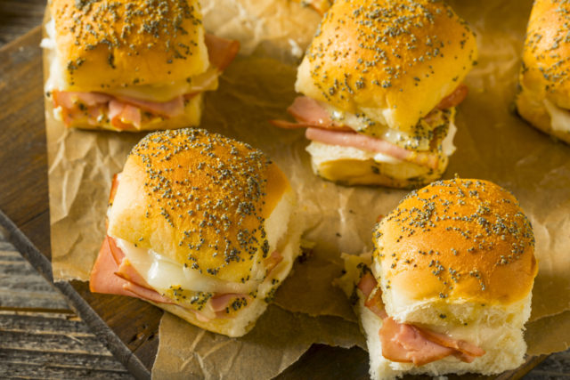

Herb-Garlic Ham & Cheese Melts

When you want a savory snack to feed a family during the holidays, this perfect finger food will be sure to please.
I first had these at a Christmas gathering and it was so amazing that I almost ate the entire pan. Even after having a full sampler plate of everything else being served.
The five flavors put together make for a mouth watering melty happy dance.
These little sliders can be made really quick and are just the perfect little meal or even could qualify as a light snack.
It is highly suggested you add this to your next potluck.
Ingredients
- 12 oz. thinly sliced Black Forest ham
- 6 oz. thinly sliced white Cheddar cheese
- 5.2 oz. container semisoft cheese with garlic and herbs
- 6 Tbsp. butter, melted
- 2 Tbsp. finely chopped shallot
- 1 Tbsp. finely chopped parsley
- 1 Tbsp. Dijon mustard
- 1 clove minced garlic
Let's get snacking!!
- Preheat oven to 350 degrees
- Combine the butter, shallot, parsley, mustard and garlic in a bowl.
- Arrange bottoms of rolls in a 13×9-inch baking pan or 3-quart rectangular baking dish.
- Add filling and tops of rolls.
- Drizzle the combined liquid over sandwiches.
- Cover pan with foil.
- Bake for 15 minutes at 350.
- Remove foild and bake an additional 10 to 15 minutes, or until cheese is melted and roll tops are light brown.